리눅스마스터-2급 (2013-12-07 기출문제)
1과목: 리눅스 운영 및 관리
1. 다음 중 사용자가 소스 컴파일하여 설치하는 프로그램을 위치시키는 디렉터리로 가장 알맞은 것은?
- /lib
- /etc
- /usr/local
- /usr
(정답률: 61%)

2. 현재 white.txt 허가권이 644이다. 아래의 보기와 같이 변경하고자 할 때 알맞은 것은?
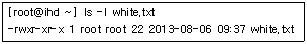
- chmod 755 white.txt
- chmod u=x,g=x,o=x white.txt
- chmod ugo+r white.txt
- chmod ugo=wx white.txt
(정답률: 84%)
3. 다음 중 특정 그룹의 다른 사용자와 파일을 공유 할 때 사용하는 명령어로 알맞은 것은?
- groupmod
- chgrp
- chsh
- chown
(정답률: 66%)
4. chsh 명령어의 버전정보를 출력해주는 옵션으로 알맞은 것은?
- -s
- -l
- -u
- -v
(정답률: 82%)
5. umask 설정값과 관련된 설명으로 틀린 것은?
- umask 는 파일 및 디렉터리 생성시 기본권한을 설정할 수 있는 명령어이다.
- 기본적인 umask 값은 8진수로 022 또는 002이다.
- umask 값이 8진수로 022일때 파일을 생성하면 권한은 644이다.
- umask 값 설정은 root만이 가능하다.
(정답률: 71%)
6. 다음 중 NFS에 대한 설명으로 가장 거리가 먼 것은?
- 리눅스 파일 시스템간에 네트워크로 Disk 공간을 공유할 때 쓰인다.
- 리눅스와 윈도우 파일 시스템간에 네트워크로 Disk 공간을 공유할 때 쓰인다.
- 리눅스와 유닉스 파일 시스템간에 네트워크로 파일 공유할 때 사용한다.
- 리눅스와 리눅스 시스템간에 네트워크로 파일을 공유할 때 사용한다.
(정답률: 62%)
7. 다음 보기에서 설명하는 것으로 알맞은 것은?
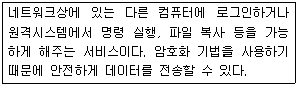
- irc
- samba
- telnet
- ssh
(정답률: 81%)
8. 다음 중 새로운 디스크를 추가로 장착하고 파일 시스템을 생성하여 사용하려고 할 때 사용되는 명령어 순서로 알맞은 것은?
- mount → fdisk → mkfs
- fdisk → mkfs → mount
- mkfs → fdisk → mount
- mount → mkfs → fdisk
(정답률: 81%)
9. 특정 사용자나 그룹에서 하드 디스크를 많이 사용하는 것을 방지하기 위해 디스크 용량에 제한을 두는 명령어로 알맞은 것은?
- mkfs
- df
- quota
- free
(정답률: 76%)
10. 다음의 결과를 보여주는 명령어로 알맞은 것은?
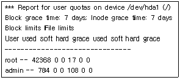
- quotastats
- edquota
- quotaon
- repquota
(정답률: 55%)
11. 리눅스에서 사용할 수 있는 셸로 틀린 것은?
- Korn shell
- C shell
- Bourne Agin Shell
- Term shell
(정답률: 73%)
12. 다음 중 사용자의 명령이 셸(Shell)을 통해 시스템에 전달되는 과정의 순서로 알맞은 것은?
- Terminal → Device Driver → Shell → Linux Kernel
- Terminal → Shell → Device Driver → Linux Kernel
- Shell → Terminal → Device Driver → Linux Kernel
- Linux Kernel → Shell → Device Driver → Terminal
(정답률: 65%)
13. chsh -l 명령으로 사용가능한 셸의 목록을 출력할 때 참고하는 파일로 알맞은 것은?
- /etc/shells
- /usr/shells
- /etc/shadow
- /bin/shells
(정답률: 73%)
14. Ctrl-Z 를 누르면 현재 실행중인 프로그램이 일시 중지상태가 되도록 설정해주는 리눅스 명령어로 알맞은 것은?
- pwd
- wc
- chsh
- stty
(정답률: 68%)
15. 본(Bourne) 셸에서 PATH 변수의 구분자로 알맞은 것은?
- 역슬래시 (\)
- 슬래시 (/)
- 콜론 (:)
- 세미콜론 (;)
(정답률: 74%)
16. Bash의 history 기능에서 기억하는 명령의 개수를 100으로 설정할 때 사용하는 환경변수로 알맞은 것은?
- HISTCMD
- HISTFILE
- HISTSIZE
- HISTSTACK
(정답률: 85%)
17. 다음 중 bash에서 설정되어있는 alias 전체를 해제 하는 명령어로 알맞은 것은?
- unalias -a
- unalias -A
- unalias -c
- unalias -t
(정답률: 74%)
18. 다음 중 bash의 history 기능을 이용하여 n번째의 명령을 실행하려 할 때 알맞은 것은?
- !-n
- !+n
- !n
- !!n
(정답률: 75%)
19. 다음 보기에서 설명하는 것으로 알맞은 것은?
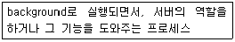
- daemon
- kernel
- command
- shell
(정답률: 84%)
20. 다음 중 background로 작업중인 프로세스를 확인하는 명령어로 알맞은 것은?
- jobs
- fg
- bg
- kill
(정답률: 75%)
21. top의 실행 후 결과값을 나타내는 항목 및 설명이 틀린 것은?
- PID : 프로세스 ID
- PPID : 자식프로세스 ID
- USER : 사용자이름
- %CPU : CPU 사용량
(정답률: 76%)
22. 다음에서 설명하는 ps 명령어 옵션으로 알맞은 것은?
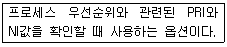
- a
- x
- u
- l
(정답률: 58%)
23. 다음 중 ps명령의 실행 결과, 출력되는 상단 메뉴항목에 대한 설명으로 틀린 것은?
- PID : Process ID 번호
- STAT : 프로세스 상태
- START : 프로세스가 시작된 시간
- TIME : Memory가 사용된 시간
(정답률: 72%)
24. 다음 kill 명령어의 시그널 중 설명이 틀린 것은?
- SIGHUP : 로그아웃 또는 접속을 끊을 때 사용한다.
- SIGINT : 현재 작동중인 프로그램의 동작을 멈출 때 사용한다.
- SIGKILL : 실행중인 프로그램을 무조건 종료 시킨다.
- SIGTERM : 비정상적인 방법으로 프로그램을 종료시킨다.
(정답률: 73%)
25. kill과 유사 하지만 "프로그램 이름"으로 프로세스 종료시키는 명령어로 알맞은 것은?
- allkill
- killall
- nice
- priority
(정답률: 74%)
26. 다음( 괄호 )안에 들어갈 단어로 알맞은 것은?
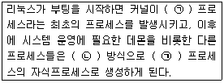
- (ㄱ) init - (ㄴ) fork
- (ㄱ) init - (ㄴ) exec
- (ㄱ) exec - (ㄴ) fork
- (ㄱ) fork - (ㄴ) exec
(정답률: 67%)
27. 다음 중 nice의 설명으로 틀린 것은?
- 아무옵션이 없으면 상속받은 현재순서의 우선권을 출력한다.
- 옵션조정수치는 -20에서 19까지이다.
- 수치가 작을수록 낮은 우선순위를 갖게 된다.
- nice는 프로세스의 우선순위를 변경시 사용된다.
(정답률: 72%)
28. 다음 중 renice의 옵션으로 틀린 것은?
- -p pid
- -u user
- -g pgrp
- -a name
(정답률: 65%)
29. 다음 중 vi 에디터에 관한 설명으로 틀린 것은?
- vi에디터는 입력모드와 명령모드로 나눈다.
- vi를 실행시키면 첫 번째 모드는 입력모드다.
- 입력모드에서 명령모드로 전환할 경우에는 [ESC]키를 누른다.
- ex명령모드에서 문자열 치환이 가능하다.
(정답률: 74%)
30. 다음 중 emacs에 대한 설명 중 틀린 것은?
- 방향키, PageUp/PageDown키도 사용 가능하다.
- vi와 달리 입력모드와 명령모드가 없다.
- 종료하려면 [Ctrl]+[x]후에 [Ctrl]+[c]를 누른다.
- 시스템과의 호환성은 우수하지 않다.
(정답률: 70%)
31. 다음 보기의 vi 명령 실행 결과로 알맞은 것은?
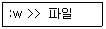
- 지정한 파일의 뒷부분에 현재 작성중인 글이 덧붙는다.
- 지정한 파일의 내용이 현재 작성중인 글에 덧붙는다.
- 지정한 파일의 내용을 삭제한다.
- 지정한 파일의 내용을 수정한다.
(정답률: 70%)
32. 다음 vi 편집 명령 중 현재 커서의 위치부터 10줄 복사하는 명령으로 알맞은 것은?
- 10yy
- yy10
- 10yw
- yw10
(정답률: 72%)
33. 다음 중 vi 편집기의 삭제 명령에 대한 설명으로 틀린 것은?
- x : 커서가 위치한 곳의 문자를 삭제한다.
- dd : 커서가 위치한 곳의 아래 줄을 삭제 한다.
- dG : 커서가 위치한 곳부터 파일 끝까지 삭제한다.
- D : 파일이 위치한 곳에서 오른쪽 끝까지 삭제한다.
(정답률: 70%)
34. 다음 중 vi 편집기의 종료 방법으로 틀린 것은?
- :q
- :wq
- :w
- :q!
(정답률: 84%)
35. rpm 패키지 설치시에 의존성을 검사하지 않기 위해 사용하는 옵션으로 알맞은 것은?
- --noscripts
- --nodeps
- --hash
- --percent
(정답률: 82%)
36. 다음 rpm 설치 옵션 중 패키지를 실제로 설치하지 않고 충돌 사항이 있는지 점검하는 옵션으로 알맞은 것은?
- --upgrade
- --test
- --oldpackage
- --root <dir>
(정답률: 75%)
37. 다음 gzip 옵션 중 압축 파일 정보를 확인하는 옵션으로 알맞은 것은?
- -q
- -l
- -d
- -t
(정답률: 67%)
38. 다음 tar 옵션 중 gzip 형식으로 만들 때 사용하는 것으로 알맞은 것은?
- -x
- -z
- -v
- -f
(정답률: 76%)
39. 다음 tar 옵션 중 처리중인 파일을 자세히 보여주는 것으로 알맞은 것은?
- -v
- -x
- -f
- -z
(정답률: 68%)
40. 다음 중 yum을 사용한 기록을 확인 하는 방법으로 가장 알맞은 것은?
- cat /var/log/yum.log
- cat /var/log/yum
- cat /var/log/messages
- dmesg | grep yum
(정답률: 67%)
41. 다음 yum 명령어의 옵션 중 설치여부를 묻지 않고 바로 설치할 때 사용하는 것으로 알맞은 것은?
- -e
- -y
- -c
- -t
(정답률: 81%)
42. 다음 중 totem이라는 패키지를 yum으로 설치하는 명령으로 알맞은 것은?
- yum install totem -y
- yum totem install -y
- yum totem -y install
- yum -y totem install
(정답률: 69%)
43. 다음 중 윈도우시스템에 공유되어 있는 프린터에 연결하려고 할 때 가장 밀접한 관계가 있는 것으로 알맞은 것은?
- Unix Printer
- local
- JetDirect
- Samba Printer
(정답률: 79%)
44. 다음 중 프린터큐에 대기 중인 인쇄작업을 취소 할 수 있는 명령어로 알맞은 것은?
- lpq
- lprm
- lpr
- lpdel
(정답률: 70%)
45. 리눅스에서 프린터 연결 선택 방법 중 설명이 틀린 것은?
- JetDirect : TCP/IP 포트로 접속하는 Socket API방식이며 간단한 Job 전송 프로토콜이다.
- Samba Printer : 윈도우즈 95/98/NT/XP등에 프린터가 공유 되어 있을때 사용가능하다.
- Local : 리눅스 시스템에 프린터가 직접 설치되어 있을 경우이다.
- Unix Printer : 프린터가 랜 환경에서 사용되는 다른 컴퓨터에 연결되어 있지 않은 경우 선택하는 옵션이다.
(정답률: 68%)
46. Floppy장치나 CD-ROM의 마운트 포인터와 연관있는 디렉터리로 알맞은 것은?
- /dev
- /mnt
- /etc
- /usr
(정답률: 68%)
47. 다음 중 오디오 CD에서 음악 파일을 추출할 때 사용하는 프로그램으로 알맞은 것은?
- cdparanoia
- sdcd
- xplaycd
- cdplay
(정답률: 74%)
48. 다음 중 리눅스 시스템에서 스캐너 사용과 관련있는 프로그램으로 알맞은 것은?
- xsane
- gimp
- ghost
- xmms
(정답률: 79%)
2과목: 리눅스 활용
49. 다음 중 X 윈도를 콘솔(console)에서 실행시키는 명령으로 알맞은 것은?
- startx
- runx
- xstart
- xrun
(정답률: 71%)
50. X 윈도 환경설정에 사용했던 유틸리티의 조합으로 알맞은 것은?
- XF86setup, xf86cfg, Xconfigurator
- xf86config, Xconfigurator, Xsetup
- XF86setup, xf86cfg, Xsetup
- XF86setup, Xsetup, Xconfigurator
(정답률: 54%)
51. 다음 중 KDE의 Konqueror 응용프로그램에서 담당하지 않는 기능으로 틀린 것은?(오류 신고가 접수된 문제입니다. 반드시 정답과 해설을 확인하시기 바랍니다.)
- 웹브라우저 접속
- 파일 관리
- ftp 접속
- E-Mail 관리
(정답률: 48%)
52. 다음 중 GNOME과 KDE의 데스크톱 환경에서 X 윈도를 강제 종료하기 위한 키의 조합으로 알맞은 것은?
- Ctrl + Alt + Enter
- Ctrl + Alt + F1
- Ctrl + Alt + BackSpace
- Ctrl + Alt + Delete
(정답률: 72%)
53. 다음 중 윈도 매니저의 종류로 알맞은 것은?
- KDE
- GNOME
- WindowMaker
- Xen
(정답률: 61%)
54. 다음 중 콘솔이나 터미널 상태에서 지나간 화면의 내용을 보려고 할 때 사용하는 키 조합으로 알맞은 것은?
- Ctrl + PageUp
- Ctrl + PageDown
- Ctrl + Enter
- Shift + PageDown
(정답률: 40%)
55. 다음에서 설명하는 프로그램으로 알맞은 것은?
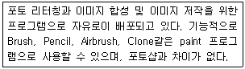
- MTV
- GIMP
- xv
- MPlayer
(정답률: 80%)
56. 다음 중 ( 괄호 )안에 들어갈 내용으로 알맞은 것은?
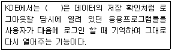
- 접속관리 기능
- 세션관리 기능
- 복구관리 기능
- 백업관리 기능
(정답률: 58%)
57. 다음 중 LAN과 WAN에 대한 설명으로 알맞은 것은?
- WAN은 LAN에 비해 통신 속도가 빠르다.
- LAN은 통신거리에 제한이 없다.
- LAN은 건물, 학교, 공장 등 일정 지역 내의 통신에 사용된다.
- LAN은 1Gbps ~ 155Gbps의 전송속도로 데이터를 송수신할 수 있다.
(정답률: 75%)
58. 다음 중 OSI 참조모델과 OSI 프로토콜에 관련된 업무를 담당하는 기관으로 알맞은 것은?
- ISO
- ANSI
- EIA
- IEEE
(정답률: 70%)
59. 다음 ( 괄호 )안에 들어갈 내용으로 알맞은 것은?
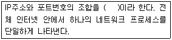
- TCP
- Udp
- Socket
- Protocol
(정답률: 60%)
60. 다음 중 프로토콜의 구성요소로 알맞은 것은?
- 구문, 의미, 타이밍
- 구문, 의미, 오버헤드
- 구문, 타이밍, 오버헤드
- 구문, 의미, 소켓
(정답률: 66%)
61. 다음 중 OSI 7 계층 모델에서 데이터링크 계층이 제공하는 인접한 개방형 시스템 간에 데이터 전송기능을 이용하여 연결성과 통신경로선택(Routing)을 제공하는 계층으로 알맞은 것은?
- 물리 계층
- 데이터링크 계층
- 네트워크 계층
- 전송계층
(정답률: 64%)
62. 다음 중 OSI의 물리, 데이터 링크 계층에서의 프로토콜로 틀린 것은?
- 이더넷
- 토큰링
- FDDI
- ARP
(정답률: 56%)
63. 다음 중 OSI의 응용 계층에 대한 설명으로 틀린 것은?
- telnet : 네트워크를 통한 원격로그인을 제공한다.
- FTP : 단방향 파일 전송에 사용된다.
- SMTP : 전자 메일을 전달한다.
- HTTP : 네트워크를 통해 웹 페이지를 전송한다.
(정답률: 75%)
64. 다음 ( 괄호 )안에 들어갈 파일명으로 알맞은 것은?
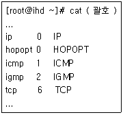
- /etc/protocols
- /etc/services
- /etc/passwd
- /etc/securetty
(정답률: 62%)
65. 다음 중 IPv4 주소 체계에서 십진 표기법으로 B클래스 서브넷 마스크로 알맞은 것은?
- 255.0.0.0
- 255.255.0.0
- 255.255.255.0
- 255.255.255.255
(정답률: 81%)
66. 다음 중 인터넷 서비스의 종류 중 나머지 3개와 성격이 틀린 것은?
- WWW(World Wide Web)
- FTP(File Transfer Program)
- ICMP(Internet Control Message Protocol)
(정답률: 59%)
67. 유즈넷 뉴스그룹을 이용하기 위해서는 특정 뉴스 리더 프로그램이 필요하다. 텍스트용 뉴스리더로서 대표적인 프로그램으로 틀린 것은?
- Pan
- Slrn
- Pine
- Tin
(정답률: 54%)
68. 다음 중 시스템에 설정된 게이트웨이 주소값을 확인하는 명령으로 알맞은 것은?
- netstat
- ifconfig
- dig
- host
(정답률: 57%)
69. 다음 중 일반적으로 루프백(Loopback) 인터페이스로 사용되는 IP주소로 알맞은 것은?
- 127.0.0.1
- 10.0.0.1
- 192.168.0.1
- 255.255.255.0
(정답률: 78%)
70. 다음 중 네트워크 주소를 변경한 후에 변경된 주소로 네트워크 서비스를 재시작하려고 할 때 관련 있는 파일로 알맞은 것은?
- /etc/init.d/network
- /etc/sysconfig/network
- /etc/sysconfig/network-scripts
- /etc/hosts
(정답률: 44%)
71. 다음 중 첫 번째 네트워크 인터페이스에 IP주소를 설정하려고 할 때 알맞은 것은?
- ifconfig eth0 192.168.0.1 netmask 255.255.255.0 up
- ifconfig eth1 192.168.0.1 netmask 255.255.255.0 up
- ifconfig eth2 192.168.0.1 netmask 255.255.255.0 up
- ifconfig eth3 192.168.0.1 netmask 255.255.255.0 up
(정답률: 80%)
72. 다음 중 ftp 클라이언트에서 파일을 업로드를 위한 명령으로 알맞은 것은?
- get
- put
- ls
- cd
(정답률: 73%)
73. 다음 중 네트워크 연결 상태와 전송 속도를 검사할 때 사용되는 명령어로 알맞은 것은?
- ping
- route
- dig
- hostname
(정답률: 79%)
74. 다음 중 특정 도메인명에 대한 IP 주소를 조회하려고 할 때 명령어로 알맞은 것은?
- nslookup
- ifconfig
- iptables
- hostname
(정답률: 69%)
75. 다음 중 1단계 도메인 대한 설명으로 틀린 것은?
- edu : 교육기관
- mil : 군사기관
- int : 국제기구
- net : 비영리기관
(정답률: 70%)
76. 다음에서 설명하는 네트워크에서 사용되는 IP로 알맞은 것은?
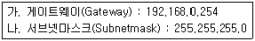
- 192.168.1.150
- 192.168.0.160
- 192.168.160.150
- 168.192.0.160
(정답률: 74%)
77. 오픈소스 DBMS로 틀린 것은?
- MySQL
- 큐브리드
- DB2
- MariaDB
(정답률: 47%)
78. 다음중 서버가상화솔루션에 대한연결이틀린 것은?
- Microsoft : Windows server 2012 hyper-V
- Citrix : Xen Desktop
- RedHat : RHEV
- VMware : vSphere
(정답률: 50%)
79. 다음 보기에 대한 설명으로 알맞은 것은?
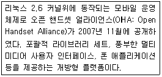
- 안드로이드
- 윈도 모바일
- 심비안
- IOS
(정답률: 76%)
80. 다음 보기에 대한 설명으로 알맞은 것은?
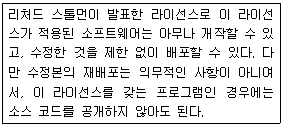
- BSD
- GPL
- MPL
- LGPL
(정답률: 45%)